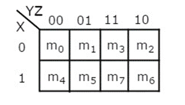
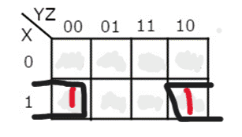

Here is a cool idea I learnt in my first of uni.
K-Maps(Karnaugh map) is a technique to reduce boolean expressions, which was found(invented?) at Bell Labs. It is mainly used in digital circuit design, but it can also be used in programming to reduce complex if-else conditions.
K-Maps can also be used when the boolean function is unknown, and only the input and output are known.

The above image is a 3-variable K-Map. K-Map can be used with both minterms and maxterms, but we will focus on minterms(Sum-Of-Products). If you notice, the minterms are written in the order- 0,1,3,2 instead of 0,1,2,3. This is because K-Map follows the gray code notation- Successive values differ by only 1 bit. If we had minterm 2 before 3, successive values would have changed by 2 bits.
Let us take the function
F(x,y,z) = xy(!z) + x(!y)(!z)
This can be simplified manually by taking x(!z) common
F(x,y,z) = x(!z)[y + !y] = x(!z)
as y + !y = 1
To reflect upon the above simplification, we need a constant part that does not change[x(!z)], and a bit that changes 2^n times[y + !y]. If it does not change 2^n times, the bit won't add up to 1(in the case of minterm).

The function F(x,y,z) has been described using a K-Map in the above image. Assume that the table wraps around like a ball, since the bottom and top part of the table differ by 1, as well as the left and right side of the table. We can only group pairs of 1 in the order of 2^n. Since the K-Map wraps, we group both the 1's and check which bit is constant, and which bit changes. We write down whatever is constant and ignore the bits that change.